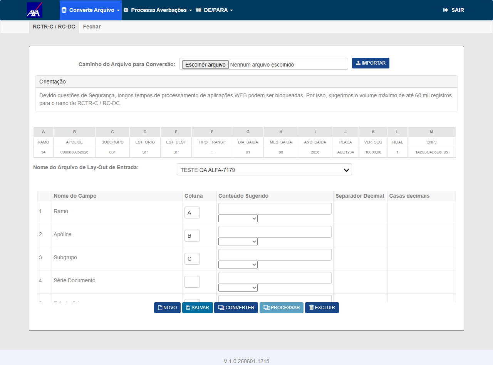
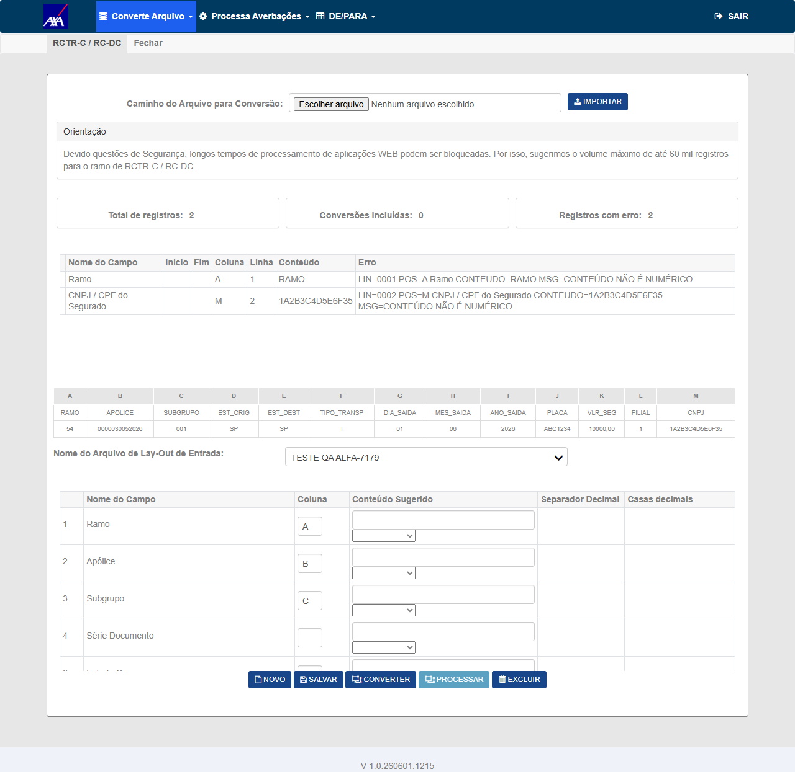
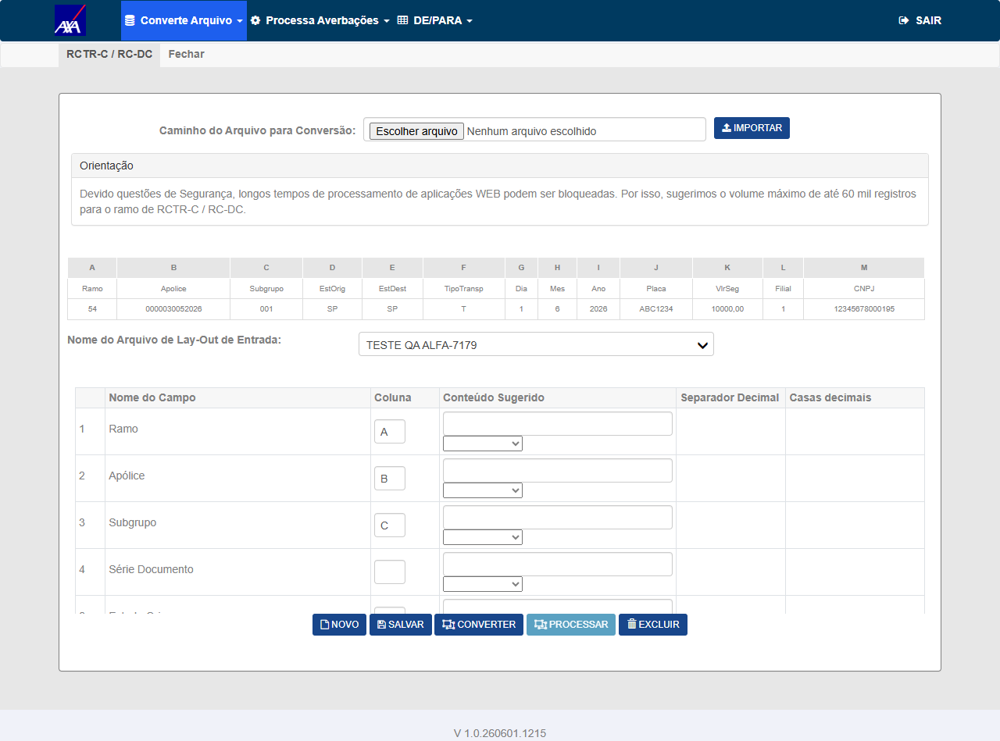
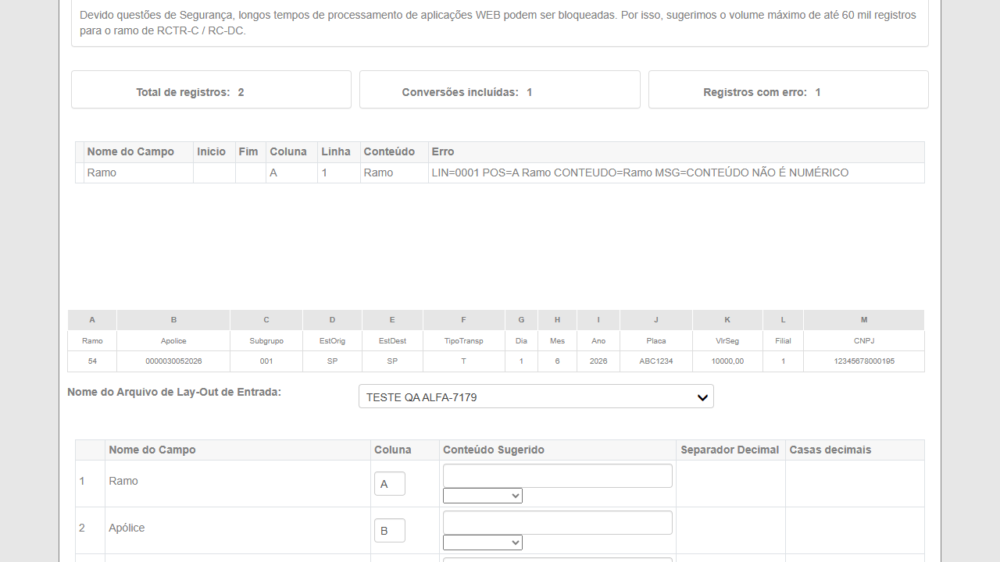
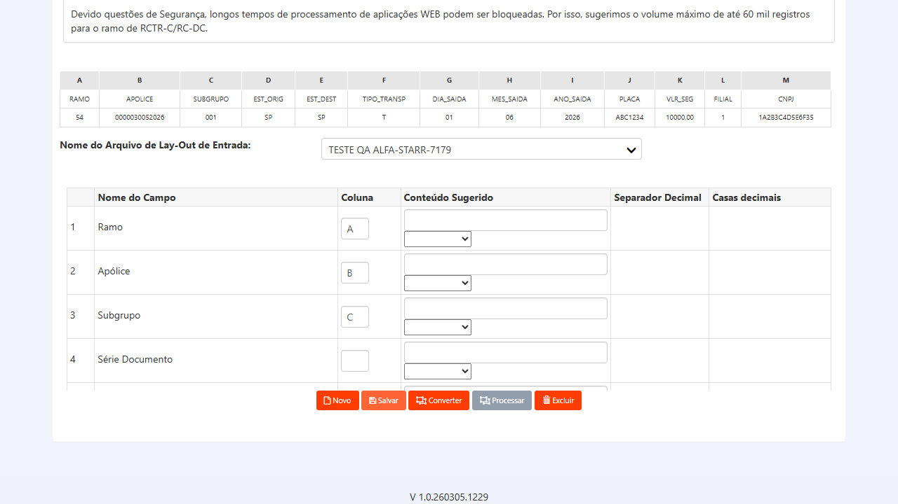
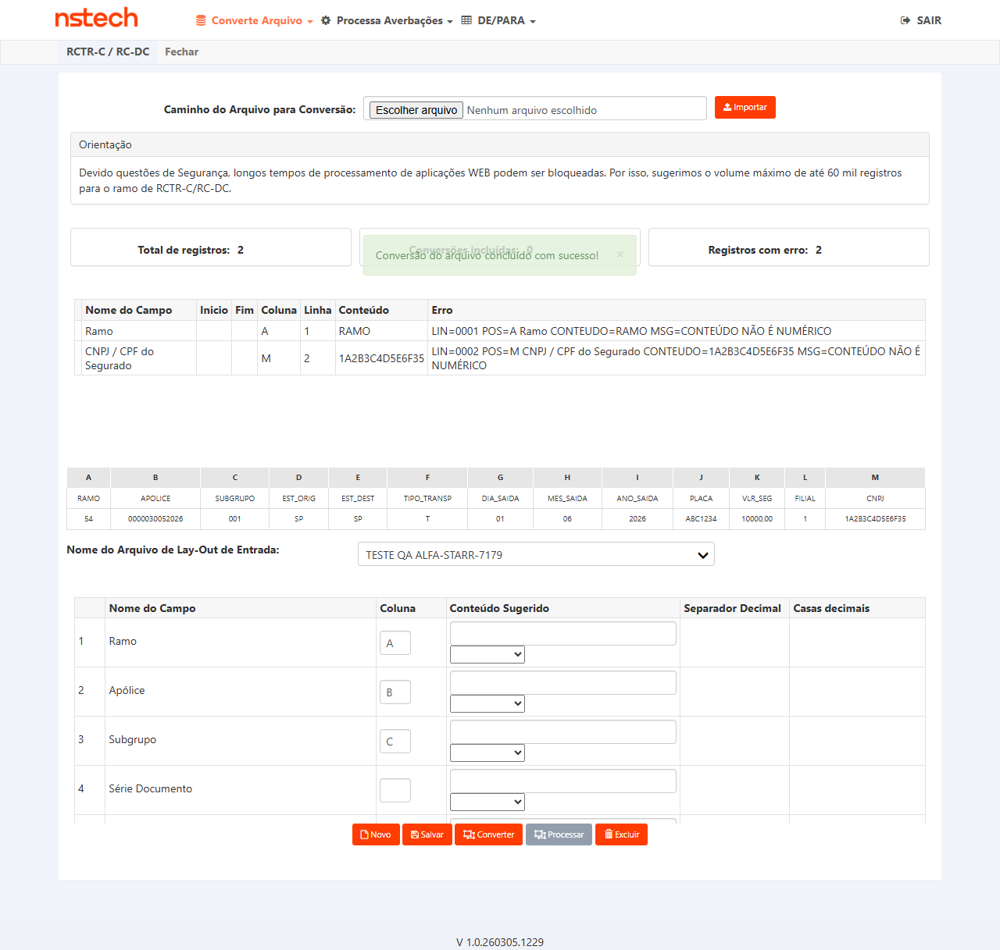
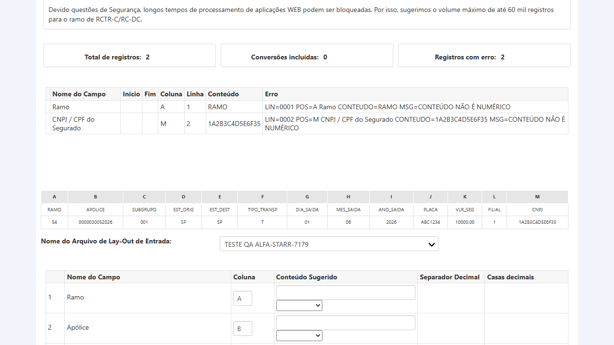

Sprint 7 Citweb · CITWEB\Sprint_7_Citweb · Dev: Fabiano Souza · Build #4953 / V 1.0.260601.1215 · 01/06/2026 · Autor: Wesley Moreira
No Conversor de Arquivos CITWEB (AXA e Starr), ao importar planilha Excel contendo CNPJ alfanumérico (ex.: 1A2B3C4D5E6F35) no campo correspondente, o sistema rejeitava 100% dos registros com a mensagem "CONTEUDO NAO E NUMERICO". A causa era a validação via Int64.TryParse no método ConversorController.ValidaTipoAtributoLinha, que não aceita caracteres alfanuméricos. Adicionalmente, o campo CNPJ no formulário de configuração de layout (Index.cshtml) também aplicava restrição numérica, impedindo a configuração de layouts com CNPJ alfanumérico.
| Campo | Valor | Observação |
|---|---|---|
| Apólice | 0000030052026 | RCTR-C (ramo 54) — confirmada existência anterior |
| Subgrupo | 001 | |
| Filial | 0001 SAO PAULO | |
| CNPJ alfanumérico de teste | 1A2B3C4D5E6F35 | Usado pelo dev no teste HML (averbação 202600000008) |
| CNPJ numérico (regressão) | 12345678000195 | CNPJ numérico válido (dígitos verificadores não são validados pelo Conversor) |
| Layout de referência | TESTE FABIANO EXCEL | Criado pelo dev — verificar existência antes de CT-002; se não existir, criar novo layout conforme CT-001 |
Cada cenário inicia retraído. Clique na faixa ou na seta para expandir. Após executar, altere data-status no HTML para aprovado, reprovado, bloqueado ou na.
Verificar que o formulário de configuração de layout no Conversor (Index.cshtml corrigido) aceita a entrada do CNPJ alfanumérico sem restrição numérica — corrige a segunda parte do bug (#7179 "campo de layout também não aceita o formato").
Usuário FRED/DERF autenticado no AXA HML (axa-hml-faturamento.nsseg.com.br). Build V 1.0.260530.1641 em produção no ambiente.
Layout salvo com sucesso. Campo 25 (CNPJ/CPF do Segurado) aceita o valor alfanumérico 1A2B3C4D5E6F35 no "Conteúdo Sugerido" sem erro de validação numérica. O layout aparece na lista de layouts disponíveis para uso no Conversor.
Positivo
Bug #7179 — "campo de layout também não aceita o formato" (Index.cshtml fix)
Execução via Playwright MCP (01/06/2026): Layout TESTE QA ALFA-7179 criado com Campo 25 (CNPJ/CPF do Segurado) mapeado para coluna M do arquivo Excel — que contém o CNPJ alfanumérico 1A2B3C4D5E6F35. Layout salvo sem erros de validação de formato. Arquivo rctr_cnpj_alfa.xlsx importado; cabeçalho confirmado na tabela de preview (coluna M = CNPJ). Build V 1.0.260601.1215.

Verificar que o passo de conversão de XLSX para TXT aceita CNPJ alfanumérico (campo 25) sem rejeitar o registro com erro "CONTEUDO NAO E NUMERICO" — corrige a parte principal do bug.
Usuário FRED/DERF autenticado em AXA HML. Excel RCTR-C preparado com pelo menos 1 linha contendo 1A2B3C4D5E6F35 no campo 25 (CNPJ). Layout disponível: TESTE FABIANO EXCEL (se não existir, usar layout criado no CT-001 ou criar novo layout mapeando corretamente o campo 25).
Resultado exibe 1 incluída (ou N incluídas). A mensagem "CONTEUDO NAO E NUMERICO" não aparece para o Campo 25. O CNPJ alfanumérico 1A2B3C4D5E6F35 configurado como "Conteúdo Sugerido" é aceito sem erro. Botão "Processar" habilitado.
Positivo (correção do bug)
Bug #7179 — rejeição 100% dos registros (ConversorController.ValidaTipoAtributoLinha fix)
Execução via Playwright MCP (01/06/2026) — FALHA: Arquivo rctr_cnpj_alfa.xlsx importado; layout TESTE QA ALFA-7179 selecionado (Campo 25 → coluna M). Resultado da conversão: Total 2 · Incluídas 0 · Rejeitados 2. A linha de dados (linha 2) com CNPJ 1A2B3C4D5E6F35 foi rejeitada com a mensagem:
"LIN=0002 POS=M CNPJ / CPF do Segurado CONTEUDO=1A2B3C4D5E6F35 MSG=CONTEÚDO NÃO É NUMÉRICO"
Confirma que o fix em ValidaTipoAtributoLinha não está funcionando corretamente no build V 1.0.260601.1215 do AXA HML. Bug permanece ativo.

Verificar que o passo de processamento (após conversão bem-sucedida) cria a averbação no sistema com CNPJ alfanumérico — valida o fluxo end-to-end do bug corrigido.
CT-002 executado com sucesso (conversão com 0 rejeições). Usuário FRED/DERF em AXA HML. Apólice 0000030052026 (RCTR-C, subgrupo 001) ativa para receber averbações.
Resultado do processamento exibe N averbações incluídas, 0 erros. Nenhuma mensagem de erro de formato de CNPJ. Averbação criada com sucesso (referência dev: averbação 202600000008 com CNPJ alfanumérico 1A2B3C4D5E6F35).
Positivo (end-to-end)
Bug #7179 — fluxo completo Converter + Processar com CNPJ alfanumérico
Garantir que a correção do bug não introduziu regressão no comportamento para CNPJs puramente numéricos — a alteração na validação do campo 25 não pode bloquear o formato numérico que funcionava anteriormente.
Usuário FRED/DERF em AXA HML. Excel RCTR-C com CNPJ numérico no campo 25 (ex.: 12345678000195 ou qualquer CNPJ numérico de 14 dígitos). Layout disponível (mesmo do CT-002 ou novo).
CNPJ numérico 12345678000195 configurado no "Conteúdo Sugerido" do Campo 25 é aceito normalmente na conversão e no processamento. 0 rejeições por CNPJ, 0 erros no processamento. Confirma não-regressão: a correção do fix de CNPJ alfanumérico não afetou o comportamento para CNPJs numéricos.
Regressão (não-regressão)
Bug #7179 — task #7199 "CNPJ numerico legado identico (nao-regressao)"
PASSOU — CNPJ numérico 12345678000195 aceito na conversão. Nenhuma regressão introduzida pelo fix.


Repetir o CT-002 no ambiente Starr HML — confirmar que o mesmo fix foi aplicado e funciona para a seguradora Starr.
⚠️ URL HML Starr confirmada com o time. Credenciais Starr HML disponíveis. Build com fix deployado no Starr. Apólice RCTR-C válida no Starr HML para usar como massa.
Mesmo comportamento do CT-002 em AXA: 0 registros rejeitados. Erro "CONTEUDO NAO E NUMERICO" não aparece.
Positivo (Starr)
FALHA — Build V 1.0.260305.1229 (Starr HML) também rejeita CNPJ alfanumérico.


Repetir CT-003 no Starr HML — confirmar processamento end-to-end com CNPJ alfanumérico.
⚠️ CT-005 executado com sucesso (conversão sem rejeições). Apólice RCTR-C Starr com dados válidos para processamento.
Averbação criada com CNPJ alfanumérico no Starr HML: 0 erros de processamento.
Positivo end-to-end (Starr)
BLOQUEADO — CT-CVR-005 reprovado (0 registros incluídos) → botão "Processar" desabilitado.

| Critério / Comportamento esperado | CTs |
|---|---|
| Campo de layout (Index.cshtml) aceita CNPJ alfanumérico | CT-CVR-001 |
| Conversão sem rejeição por CNPJ alfanumérico (AXA) | CT-CVR-002 |
| Processamento end-to-end com CNPJ alfanumérico (AXA) | CT-CVR-003 |
| Não-regressão: CNPJ numérico legado inalterado | CT-CVR-004 |
| Fix aplicado em Starr (conversão) | CT-CVR-005 |
| Fix aplicado em Starr (processamento) | CT-CVR-006 |
| Risco | Probabilidade | Impacto | Mitigação |
|---|---|---|---|
| Starr não recebeu o mesmo deploy — fix ausente | Média | Alto | Confirmar com dev se o build foi deployado em Starr antes de executar CT-005/006. Se não: marcar bloqueado e criar bug separado. |
| Layout "TESTE FABIANO EXCEL" não disponível no ambiente AXA HML atual | Baixa | Baixo | Criar novo layout no CT-001 (já coberto). Risco mínimo. |
| Apólice 0000030052026 sem capacidade de receber mais averbações (limite) | Baixa | Médio | Se CT-003 falhar por limite, consultar banco para outra apólice RCTR-C ativa em AXA HML. |
| Fix introduziu regressão em outros ramos (RCTA-C, RCTF-C etc.) | Baixa | Médio | Fora do escopo deste card; avaliar se o dev validou os outros ramos. Se houver suspeita, testar converter em um ramo adicional. |